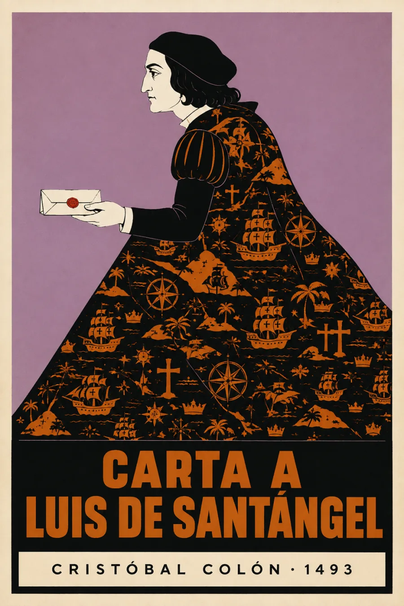
Carta a Luis de Santángel
4.2/5
Resumen
La carta que Cristóbal Colón envió en 1493 al escribano real Luis de Santángel anunciando el "descubrimiento" de tierras en las Indias tras su primer viaje. Impresa y difundida por toda Europa casi de inmediato, es el primer relato público del encuentro con el Nuevo Mundo y el documento que encendió el imaginario europeo sobre América.
Los cuatro viajes del almirante y su testamento
3.0/5
Resumen
Las cartas, diarios de a bordo y el testamento del propio Cristóbal Colón, documentando sus cuatro travesías atlánticas entre 1492 y 1504. Un relato de primera mano —y no poco interesado— del primer contacto con el Caribe y las negociaciones con la Corona que lo hicieron posible.

La Celestina
5.0/5
Resumen
Tragicomedia dialogada de finales del siglo XV que sigue la obsesión amorosa de Calisto por Melibea, orquestada por Celestina, la vieja alcahueta que da nombre a la obra. Puente entre el mundo medieval y el renacentista, célebre por su realismo psicológico y su desenlace trágico y moralizante.
Brevísima relación de la destrucción de las Indias
5.0/5
Resumen
Denuncia testimonial de Bartolomé de las Casas contra las atrocidades cometidas por los colonizadores españoles en el Caribe y el continente, escrita en 1542 como petición directa a la Corona para reformar el trato a los pueblos indígenas. Un texto tan influyente como controvertido en la formación de la Leyenda Negra española.
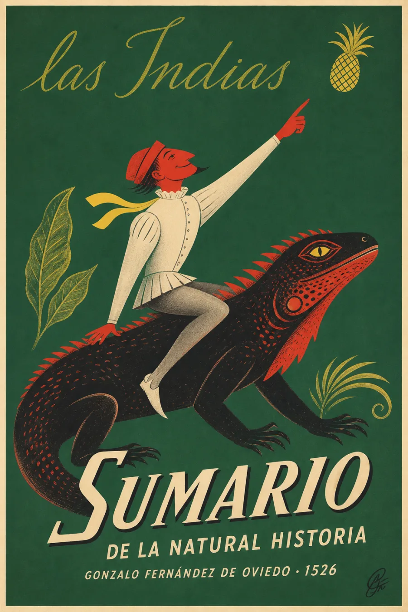
Sumario de la Natural Historia de las Indias
4.3/5
Resumen
Gonzalo Fernández de Oviedo escribió este resumen en 1526 como adelanto de su monumental Historia general y natural de las Indias, encargada por Carlos V. Basado en años de servicio como funcionario colonial en el Caribe y Centroamérica, describe con ojo de testigo la flora, fauna, geografía y costumbres del Nuevo Mundo —la piña, el huracán, la canoa, la hamaca— introduciendo a los lectores europeos palabras y realidades hasta entonces desconocidas.
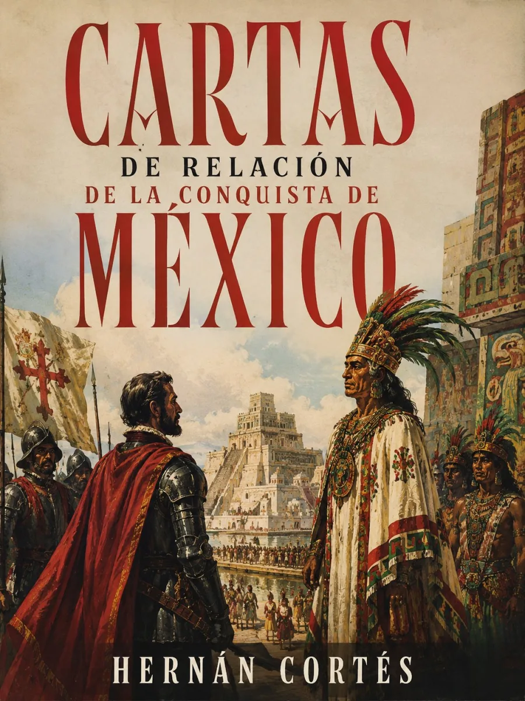
Cartas de Relación
4.7/5
Resumen
Las cinco cartas que Hernán Cortés envió al emperador Carlos V entre 1519 y 1526, narrando en primera persona la caída de Tenochtitlan y la conquista del imperio azteca. Un relato tan fascinante como interesado: el propio conquistador construyendo, carta a carta, la versión de los hechos que quería que la Corona creyera.
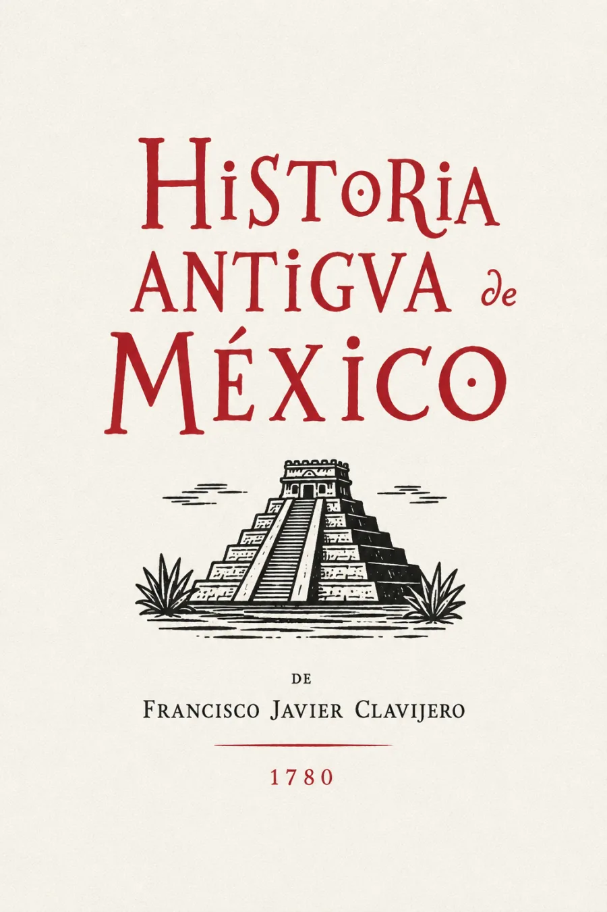
Historia antigua de México
4.5/5
Resumen
El jesuita mexicano Francisco Javier Clavijero escribió esta historia en 1780 durante su exilio en Italia, tras la expulsión de la Compañía de Jesús de los territorios españoles. Reconstruye la civilización mexica desde sus orígenes hasta la caída de Tenochtitlan, documentando su calendario, religión, ciencias y organización social, y dedica sus últimos libros a refutar a los naturalistas europeos que negaban la capacidad intelectual de los pueblos americanos. Una de las primeras defensas eruditas del legado indígena escrita por un criollo americano.
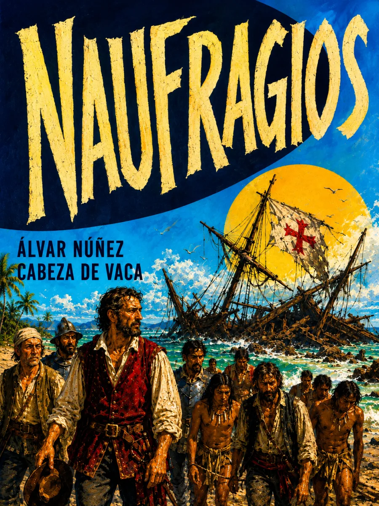
Naufragios
4.9/5
Resumen
Álvar Núñez Cabeza de Vaca narra el desastre de la expedición de Pánfilo de Narváez y los ocho años que pasó vagando desnudo y cautivo por las costas y desiertos de lo que hoy es Florida, Texas y el norte de México, sobreviviendo como esclavo, comerciante y curandero entre los pueblos indígenas antes de reencontrar a los suyos en 1536. Publicada en 1542, es tan crónica de supervivencia como confesión de un hombre transformado por el contacto con un mundo que España apenas comenzaba a comprender.
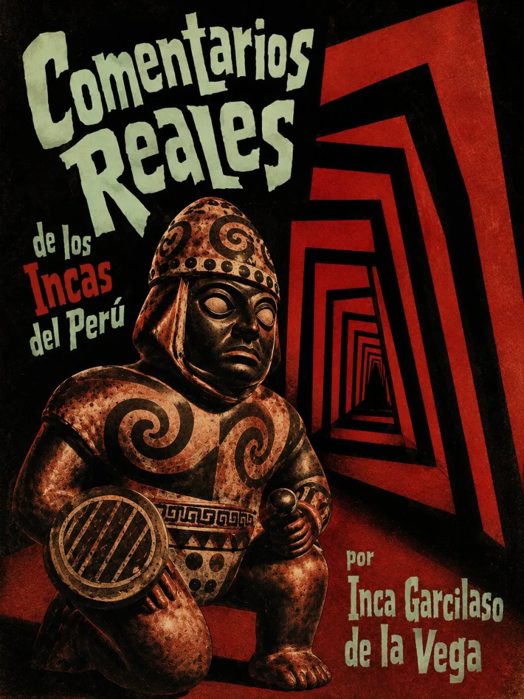
Comentarios Reales de los Incas
4.6/5
Resumen
Escrita por el hijo de un conquistador español y una princesa inca, esta crónica de 1609 entreteje la historia oral y la mitología incaicas con el relato de la conquista del Perú. Una de las primeras grandes obras de autoría mestiza, escrita desde ambos mundos a la vez.
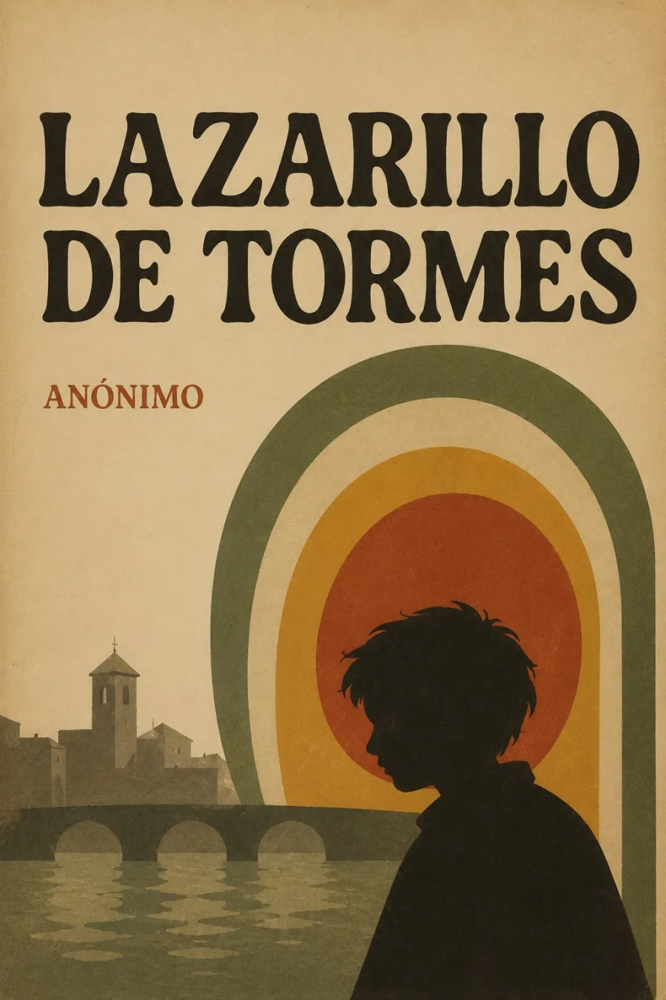
Lazarillo de Tormes
5.0/5
Resumen
Novela picaresca anónima de 1554 que sigue a un niño pobre al servicio de una serie de amos —un ciego mendigo, un cura avaro, un escudero venido a menos— en una sátira mordaz de la hipocresía social del Siglo de Oro. Fundacional por su voz confesional en primera persona, irónica de principio a fin.
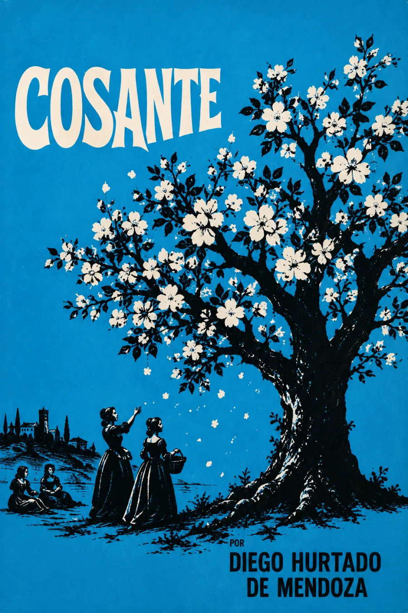
Cosante
3.4/5
Resumen
Poema lírico de Diego Hurtado de Mendoza, diplomático, humanista e historiador del siglo XVI, compuesto en la antigua forma del cosante o cossante —de origen galaico-medieval, con paralelismo y estribillo—, que el autor revive dentro del gusto renacentista por recuperar formas poéticas tradicionales. Ejemplo de la versatilidad de un autor mejor conocido por su Guerra de Granada.
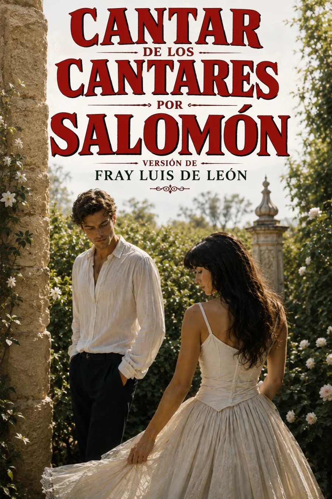
Cantar de los cantares
4.4/5
Resumen
Fray Luis de León tradujo el Cantar de los Cantares bíblico al castellano hacia 1561 para consuelo espiritual de su prima, sor Isabel de Osorio, sin intención de publicarlo. La traducción, junto con su comentario en prosa, fue uno de los cargos que la Inquisición usó contra él en el proceso que lo llevó a prisión en 1572; el texto no se imprimió hasta 1798, más de dos siglos después de su muerte. Su versión conserva la sensualidad del diálogo nupcial original, entendido tradicionalmente como alegoría del amor entre Dios y el alma.
Vivo sin vivir en mí
4.7/5
Resumen
Una de las glosas místicas más célebres de Santa Teresa de Jesús, construida sobre el estribillo "que muero porque no muero". Expresa la paradoja central de la experiencia mística carmelita: el alma que, unida a Dios en el éxtasis, vive angustiada por seguir atada a un cuerpo mortal que la separa de la unión definitiva.
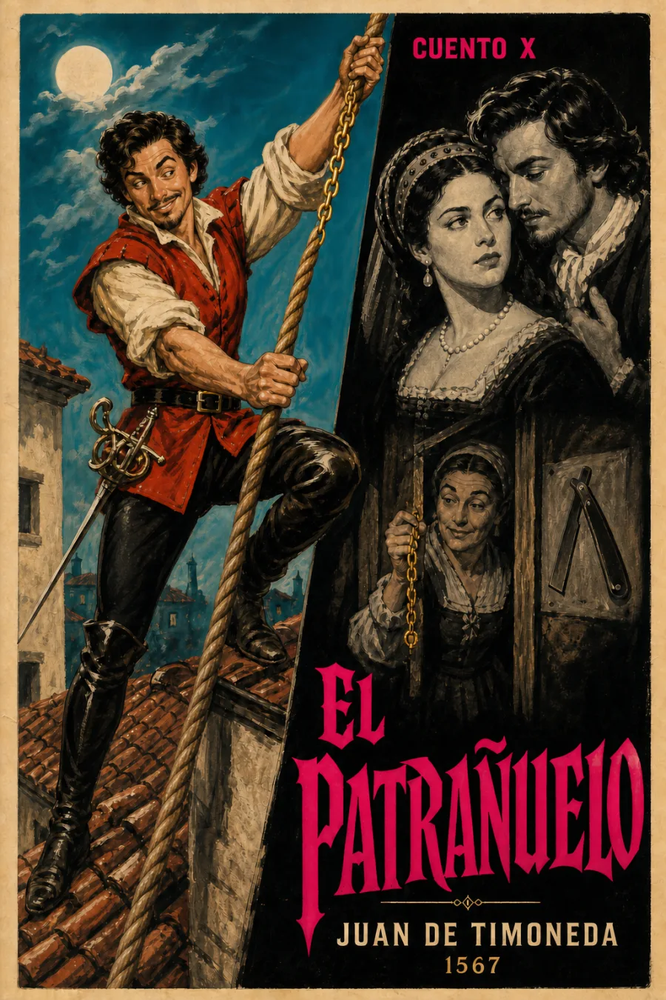
Cuento X
3.6/5
Resumen
Uno de los veintidós relatos de El Patrañuelo (1567) de Juan de Timoneda, colección de "patrañas" o cuentos breves de entretenimiento adaptados de fuentes italianas y clásicas —entre ellas el propio Boccaccio— al gusto español. Timoneda fue clave en la difusión de la narrativa breve europea en la España del Siglo de Oro.
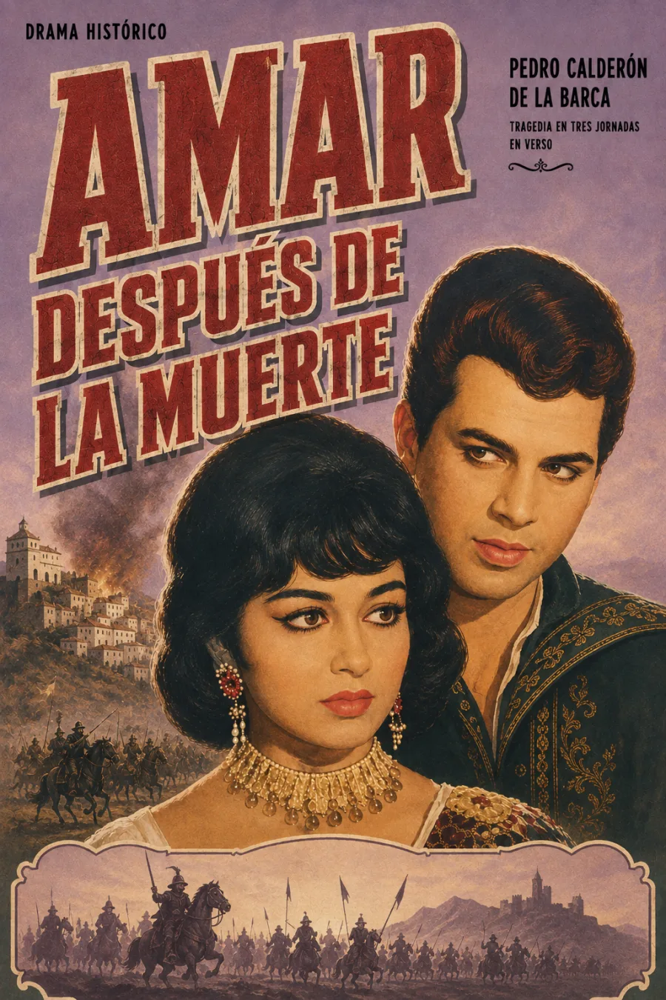
Amar después de la muerte
4.3/5
Resumen
Drama de Pedro Calderón de la Barca ambientado en la rebelión de los moriscos de las Alpujarras (1568–1571), durante el reinado de Felipe II. Don Álvaro Tuzaní jura vengar la muerte de su esposa Clara, asesinada en la represión cristiana del levantamiento, en una de las pocas obras del teatro áureo que retrata con cierta simpatía el sufrimiento morisco frente a la violencia de la Corona.
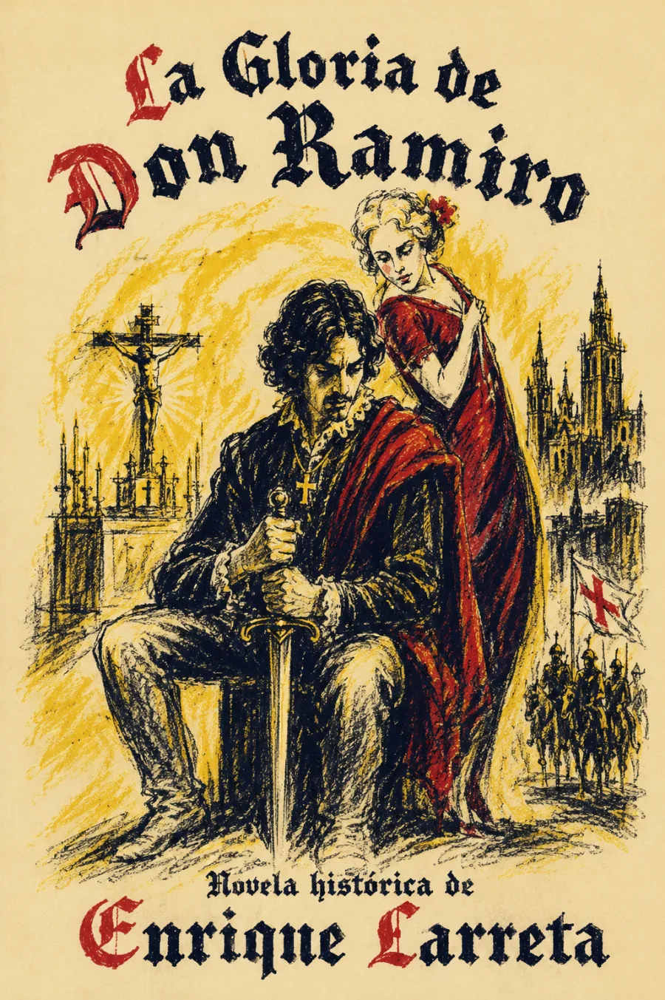
La gloria de don Ramiro
4.4/5
Resumen
Novela histórica del argentino Enrique Larreta, publicada en 1908 pero ambientada en la Ávila del reinado de Felipe II, donde el joven hidalgo Ramiro de Alcocer se debate entre el amor terrenal, la fe católica y la llamada de las armas, hasta enrolarse en la expedición a Berbería que terminaría en el desastre de los Gelves. Con su prosa arcaizante y suntuosa, Larreta reconstruye el fanatismo religioso y la decadencia imperial española del Siglo de Oro desde la distancia de un modernista americano.
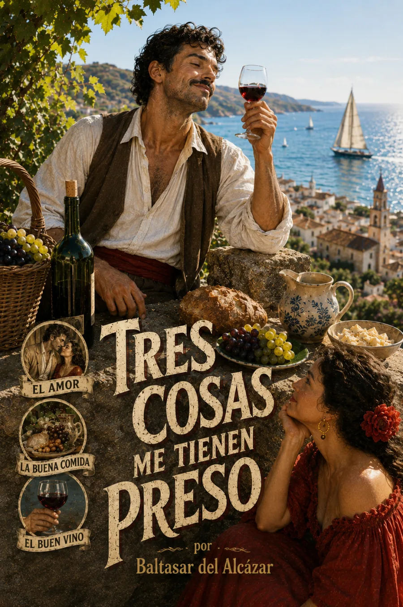
Tres cosas me tienen preso
4.1/5
Resumen
Epigrama del poeta sevillano Baltasar del Alcázar, maestro del ingenio ligero y epicúreo del Siglo de Oro, que confiesa sentirse cautivo de tres placeres: Inés, el jamón y las berenjenas con queso. Con el humor desenfadado y el gusto gastronómico característicos de su poesía, Alcázar convierte una lista de apetitos cotidianos en uno de los poemas más recordados y citados del costumbrismo humorístico español.
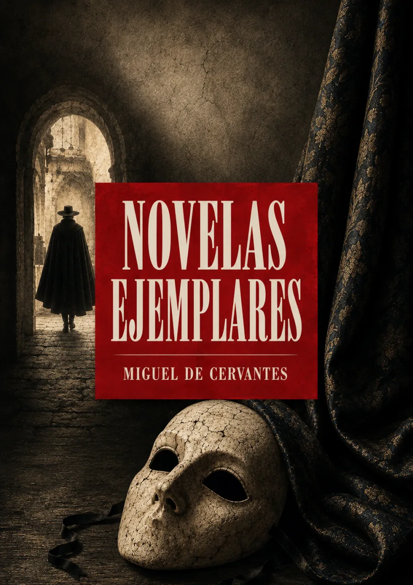
Novelas ejemplares
4.8/5
Resumen
Miguel de Cervantes reunió en 1613 doce relatos breves de la España contemporánea a su pluma, desde pícaros y gitanas hasta caballeros y damas de alta alcurnia, escritos, según su propio prólogo, para "entretener el ánimo" sin dejar "tropezón que tropiece" en la moral del lector. Títulos como "Rinconete y Cortadillo", "La gitanilla" o "El licenciado Vidriera" muestran a un Cervantes maestro de la narrativa corta, tan influyente para el género en español como el propio Quijote lo fue para la novela.
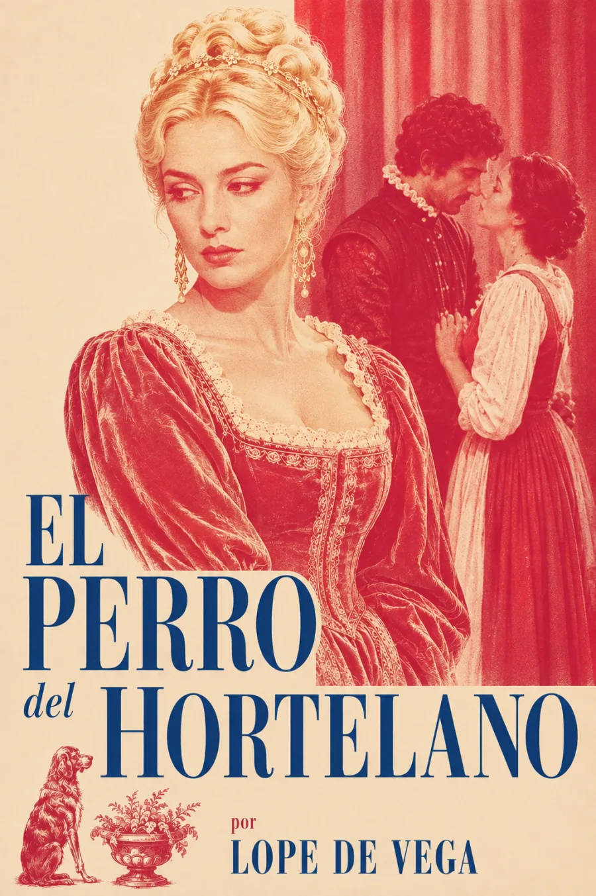
El perro del hortelano
4.6/5
Resumen
En la Nápoles aristocrática de su tiempo, Lope de Vega retrata a Diana, condesa de Belflor, que no ama a su secretario Teodoro pero tampoco soporta que otra mujer lo ame, como el perro del refrán que "ni come ni deja comer." Los celos y el orgullo de clase enredan a Diana en un vaivén de rechazo y deseo hasta que el astuto criado Tristán urde un engaño que resuelve, sin resolverlo del todo, el abismo social entre los amantes. Una de las comedias de capa y espada más ingeniosas del Siglo de Oro sobre el amor contra las convenciones de linaje.
Romances
4.0/5
Resumen
Esta primera edición reunida de los romances de Luis de Góngora recoge la faceta más popular y versátil de un poeta mejor conocido por la dificultad culterana de sus Soledades. Romances moriscos y pastoriles conviven con baladas burlescas y de amor, mostrando la misma inventiva verbal del "Príncipe de los poetas" puesta al servicio de una forma tradicional y cantable. Publicados y difundidos en gran parte tras su muerte, consolidaron su fama incluso entre quienes nunca leyeron sus obras mayores.
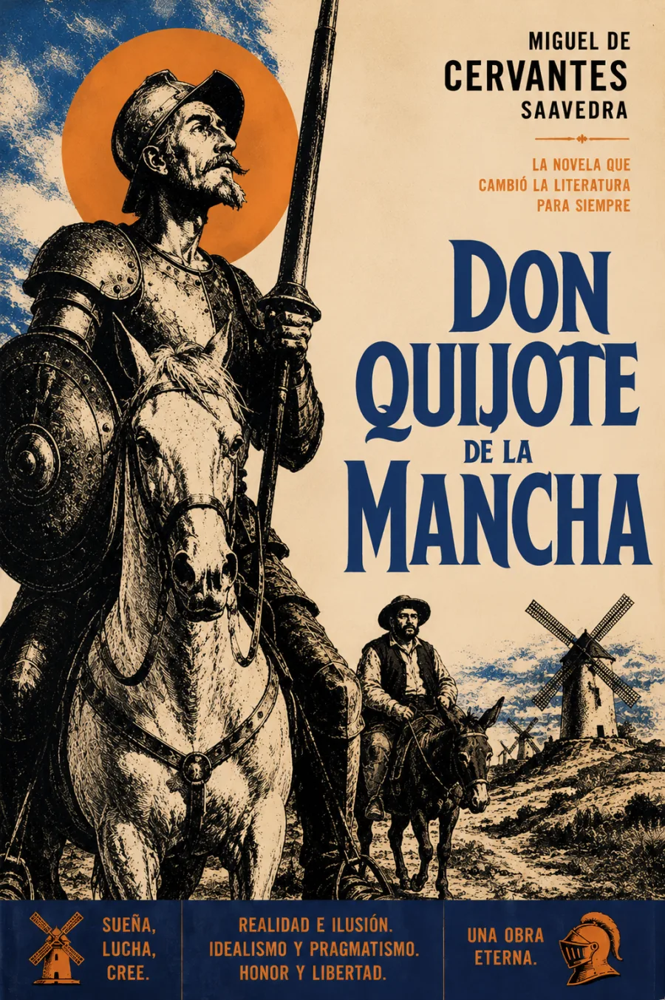
Don Quijote
5.0/5
Resumen
La obra maestra de Miguel de Cervantes, publicada en dos partes —1605 y 1615—, narra las salidas de Alonso Quijano, un hidalgo manchego que enloquece de tanto leer libros de caballerías y se lanza al camino como el caballero andante Don Quijote, acompañado de su escudero Sancho Panza. La segunda parte, escrita tras la aparición de un Quijote apócrifo, alcanza una modernidad asombrosa: los propios personajes saben que ya son famosos por sus aventuras impresas. Fundacional para la novela moderna, es la obra más traducida y editada de la lengua española después de la Biblia.
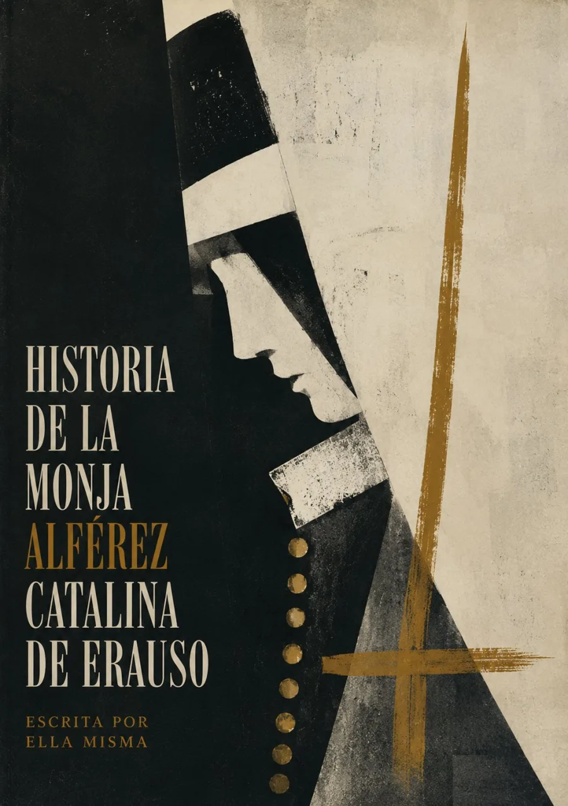
Historia de la Monja Alférez
4.4/5
Resumen
La autobiografía de Catalina de Erauso, una monja vasca que escapó de su convento a los quince años, se vistió de hombre y cruzó el Atlántico para reinventarse como soldado en las guerras de conquista de Chile y Perú. Entre duelos, fugas y una identidad que mantuvo oculta durante casi dos décadas, su relato desafía sin proponérselo las categorías de género y santidad de la España imperial, hasta que el Papa mismo le concedió permiso para vivir vestida de hombre el resto de su vida.
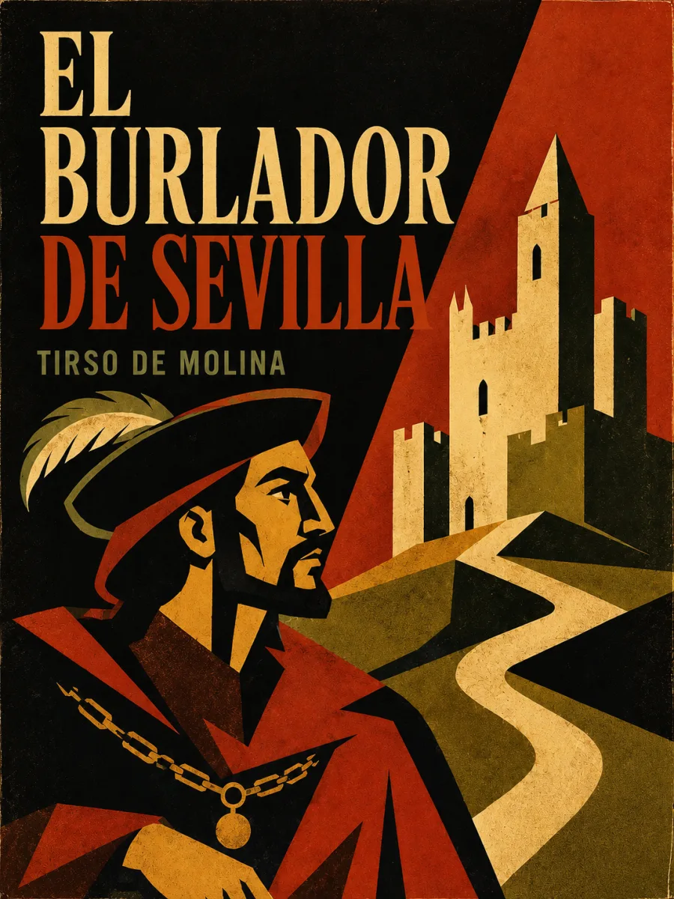
El burlador de Sevilla
4.5/5
Resumen
Tirso de Molina da vida hacia 1630 al personaje que definiría un arquetipo: don Juan Tenorio, un noble sevillano que seduce y traiciona a mujeres de toda condición sin temer castigo divino ni humano, confiando en que siempre tendrá tiempo de arrepentirse antes de morir. Cuando burla y mata al padre de una de sus víctimas, la estatua funeraria del Comendador cobra vida para arrastrarlo, ya sin tiempo para el arrepentimiento, hasta las llamas del infierno. La obra fundacional del mito de don Juan, origen de todas sus reencarnaciones posteriores en la literatura europea.
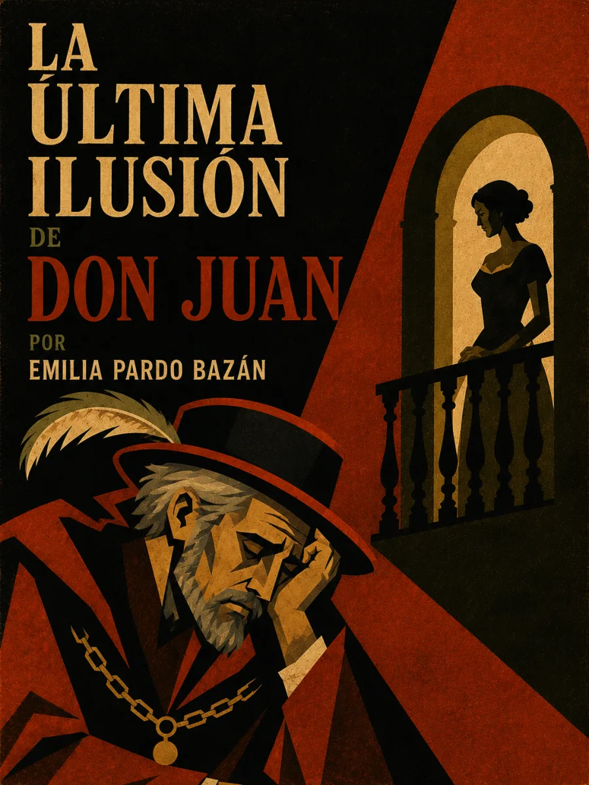
La última ilusión de Don Juan
3.7/5
Resumen
Emilia Pardo Bazán imagina en 1893 al mítico Don Juan Tenorio ya envejecido, todavía persiguiendo un último amor desde el balcón de una mujer que lo observa con una mezcla de compasión y desdén. Aunque escrito en el siglo XIX, el relato mantiene al personaje en su propia España áurea de capa y espada, la misma en la que Tirso de Molina lo hizo nacer, para desmontar con ironía feminista el mito seductor mostrándole la vejez y el ridículo que la leyenda nunca le permite.
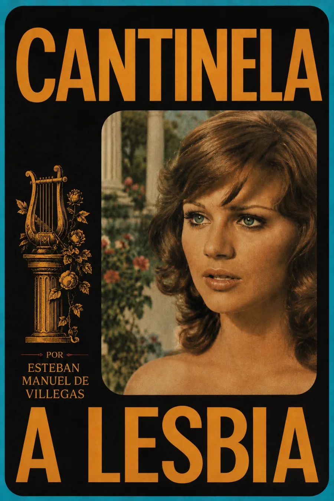
Cantinela a Lesbia
3.2/5
Resumen
Oda de Esteban Manuel de Villegas, poeta riojano formado en el clasicismo grecolatino, dirigida a una "Lesbia" de convención horaciana y catuliana —no una figura real, sino el nombre tradicional de la amada en la poesía amorosa clásica—. Publicada en sus Eróticas o amatorias (1618), muestra la métrica clásica que Villegas fue pionero en aclimatar al castellano.
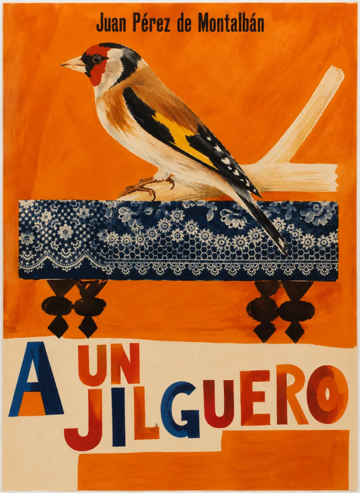
A un jilguero
3.7/5
Resumen
Poema de Juan Pérez de Montalbán, discípulo de Lope de Vega, dedicado al canto del jilguero como símbolo de la libertad y la belleza natural frente al cautiverio. Ejemplo del gusto barroco por la poesía descriptiva de aves y naturaleza, género cultivado por buena parte del círculo lopista.
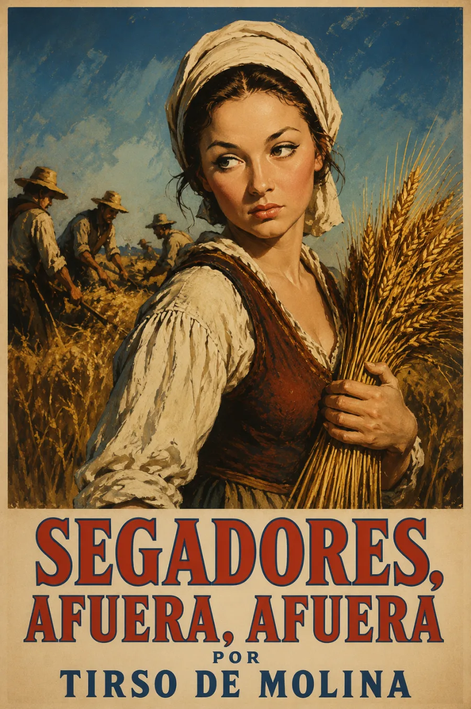
Segadores, afuera, afuera
3.3/5
Resumen
Villancico de siega incluido en una de las comedias de Tirso de Molina, de la tradición de canciones de trabajo agrícola que los dramaturgos del Siglo de Oro insertaban en sus obras para ambientar escenas populares. Su estribillo imita el pregón real de las cuadrillas de segadores llamando a despejar el campo.
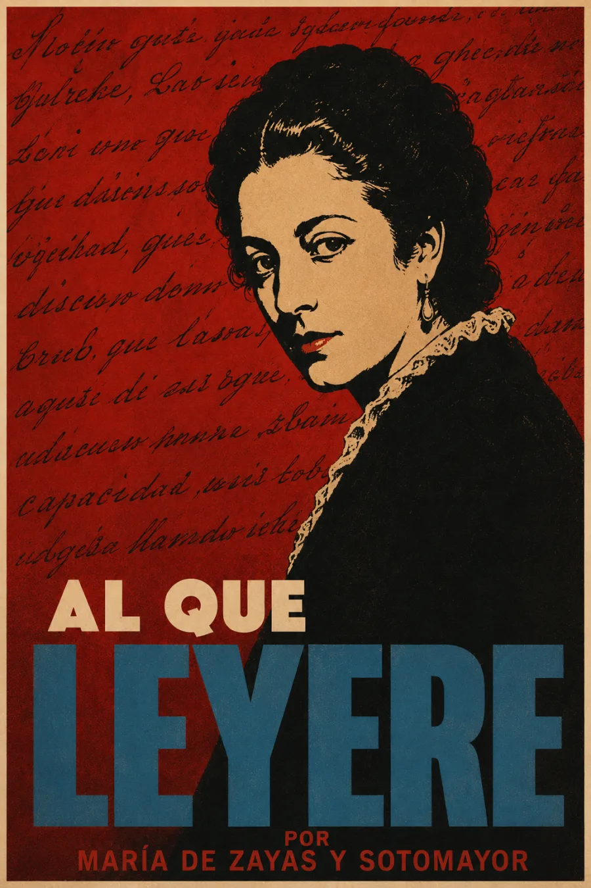
Al que leyere
4.1/5
Resumen
El prólogo con el que María de Zayas y Sotomayor abre sus Novelas amorosas y ejemplares (1637), dirigido directamente "al que leyere". En él reivindica con firmeza el derecho de las mujeres al estudio y la escritura, anticipando el tono defensivo y polémico que recorrería toda su obra narrativa.
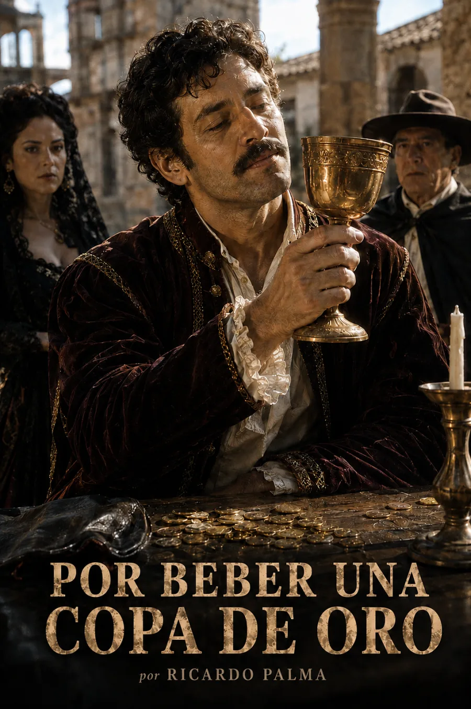
Por beber una copa de oro
4.0/5
Resumen
Una de las Tradiciones peruanas de Ricardo Palma, ambientada en el Lima virreinal, donde la vanidad de beber en copa de oro desencadena una anécdota de honor, codicia y castigo colonial contada con la ironía y el gusto por el dato histórico curioso que definen el género que Palma inventó. Como el resto de sus tradiciones, mezcla archivo colonial y leyenda oral limeña en un relato breve, ágil y moralizante a la vez.
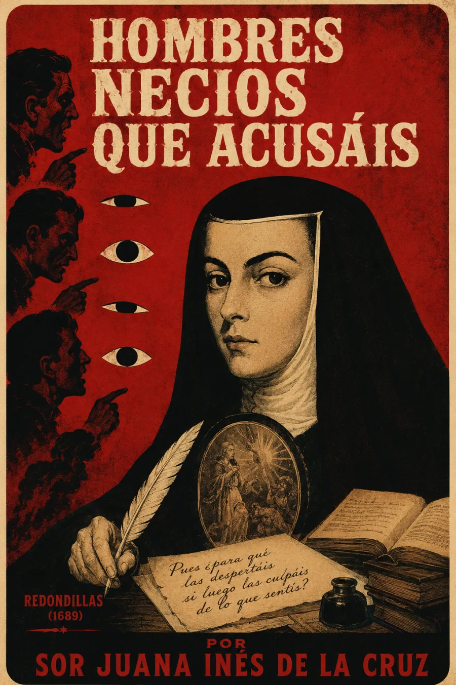
Redondillas
4.9/5
Resumen
El poema más citado de Sor Juana Inés de la Cruz, célebre por su verso inicial "Hombres necios que acusáis". En cuartetas de arte menor, la monja jerónima novohispana desmonta con ironía implacable la doble moral masculina que exige virtud a las mujeres mientras las persigue con deseo.
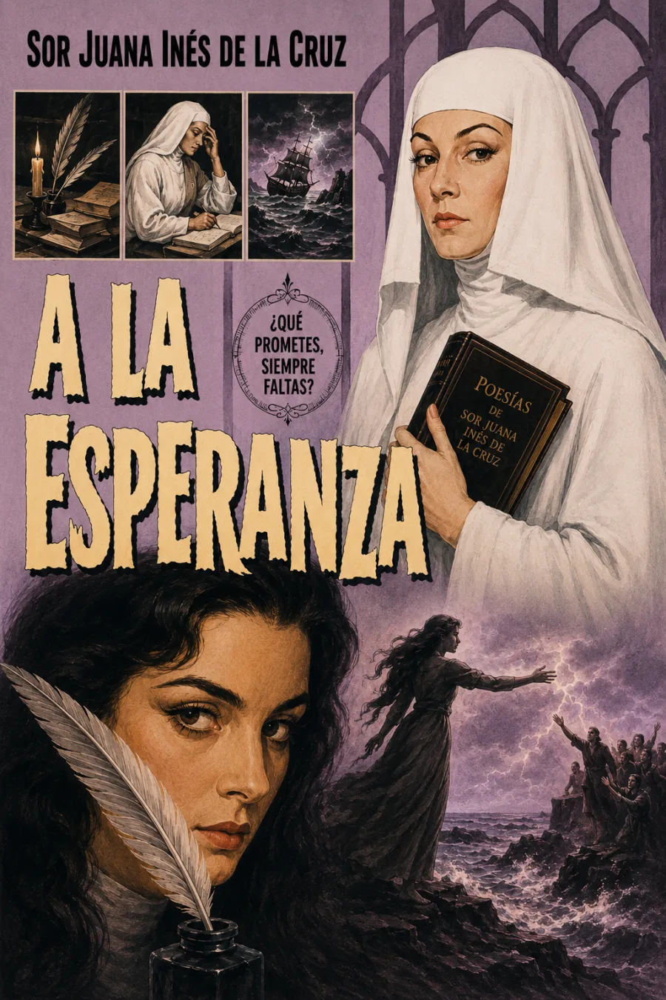
A la esperanza
3.8/5
Resumen
Soneto de Sor Juana Inés de la Cruz que personifica la Esperanza como una "verde ilusión" engañosa, alimento de quien vive de promesas incumplidas. Meditación breve y desengañada sobre el deseo y la ilusión, propia del pesimismo barroco de la época.
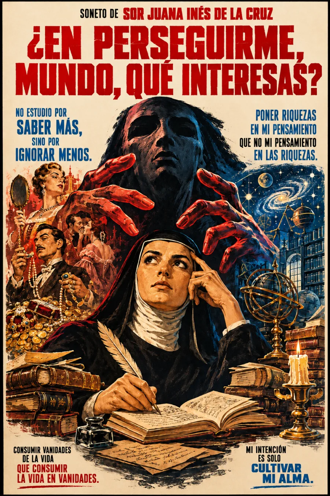
¿En perseguirme, Mundo, qué interesas?
4.0/5
Resumen
Soneto de Sor Juana Inés de la Cruz en el que la voz poética se defiende del "Mundo" que la persigue por dedicarse al estudio en vez de a las riquezas materiales, declarando que prefiere "poner riquezas en mi entendimiento / que no mi entendimiento en las riquezas". Una de sus declaraciones más directas en defensa de la vida intelectual femenina.
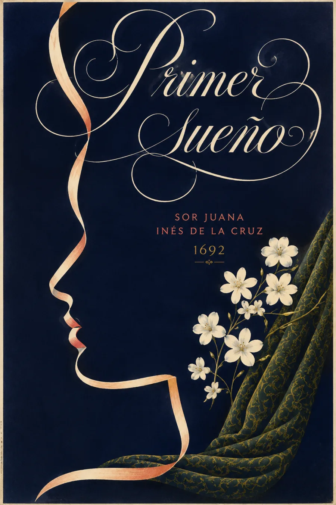
Primer sueño
4.6/5
Resumen
El poema filosófico más ambicioso de Sor Juana Inés de la Cruz, en el que el alma, liberada del cuerpo dormido, asciende a contemplar el universo entero en busca de conocimiento absoluto, hasta ser vencida por sus propios límites y despertar con la salida del sol. Silva de más de novecientos versos que sitúa a Sor Juana entre los grandes poetas del Barroco hispánico junto a Góngora.
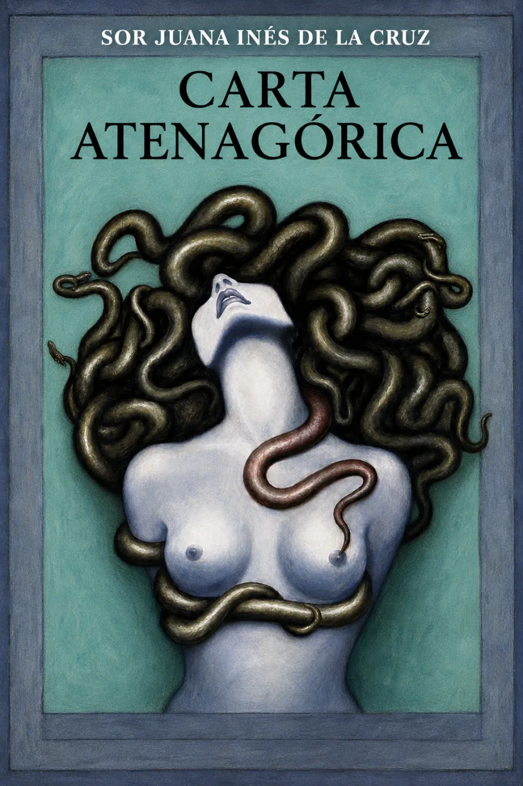
Carta atenagórica
4.2/5
Resumen
Crítica teológica de Sor Juana Inés de la Cruz a un sermón del jesuita portugués Antonio Vieira, publicada sin su consentimiento en 1690 por el obispo de Puebla bajo el título de Carta atenagórica. Su erudición y el atrevimiento de una monja al refutar a un predicador reconocido desataron la controversia que la llevaría, un año después, a escribir su célebre Respuesta a Sor Filotea.
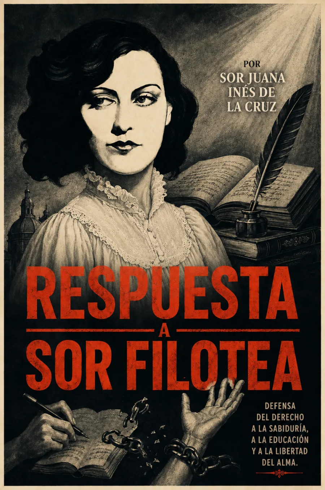
Respuesta a Sor Filotea
4.8/5
Resumen
La defensa autobiográfica que Sor Juana Inés de la Cruz escribió en 1691 en respuesta a la carta del obispo de Puebla —firmada bajo el seudónimo de "Sor Filotea"— que la instaba a abandonar el estudio profano por la vida religiosa. En ella narra su vocación intelectual desde la infancia y defiende, con argumentos teológicos y personales, el derecho de las mujeres al saber.
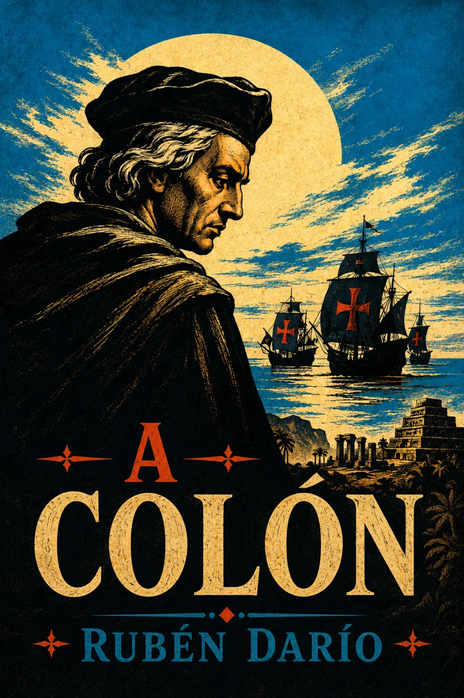
A Colón
4.5/5
Resumen
Rubén Darío escribió esta oda en 1892, con motivo del cuarto centenario del primer viaje de Colón, para reprocharle directamente al almirante el estado de la América que su llegada desencadenó: repúblicas convulsas, caudillos, indígenas explotados y una independencia traicionada por sus propios herederos. Lejos de la celebración oficial del centenario, Darío convierte el poema en una de las primeras grandes acusaciones literarias contra el legado colonial y sus consecuencias.